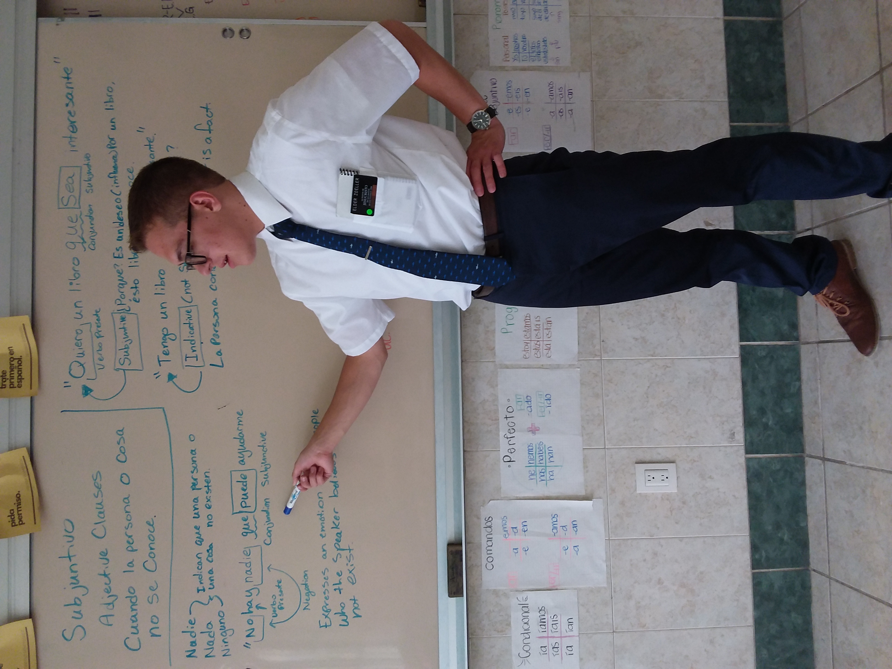
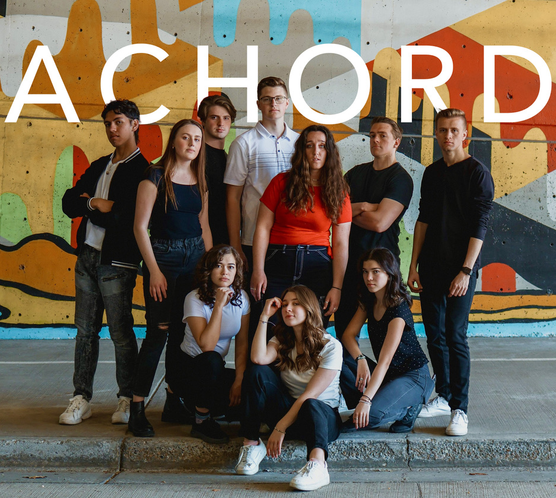
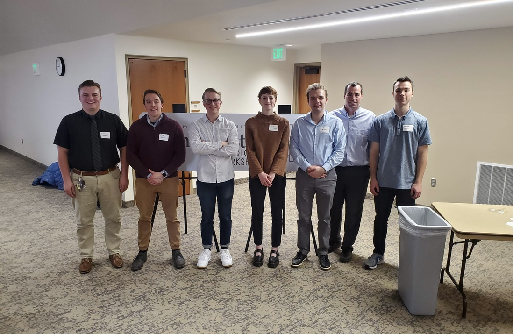
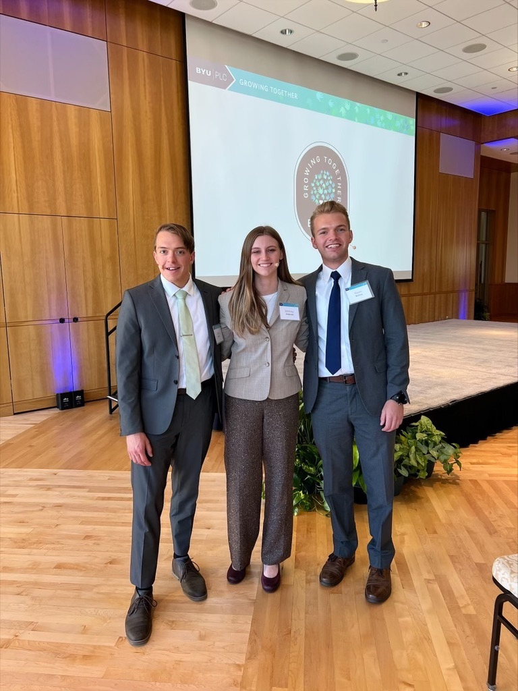

The Path
Wyoming → Provo → Cambridge → Pittsburgh → DurhamVolunteer Missionary
Church of Jesus Christ of Latter-day Saints · East Los Angeles, CA
Two years working with migrant and refugee communities in East LA. Became ACTFL-certified fluent in Spanish and developed a lasting interest in the economic challenges facing immigrant communities — I still volunteer 3–5 hours per week teaching English to Spanish speakers.

B.S. Economics · Mathematics Minor
Brigham Young University · Provo, UT
Graduated with a 3.71 GPA, Honors Program member. Led the computer vision team at the BYU Record Linking Lab — managing 6+ CV projects for FamilySearch and Ancestry. Also beatboxed in 1AChord, BYU's premier co-ed a cappella group.

Computer Vision Researcher
Harvard Business School · Cambridge, MA
Built a custom OCR and image segmentation pipeline processing 25k+ images and 1M+ data points for an HBS PhD dissertation on the Kodak collapse — my first real taste of research at the intersection of computer vision and empirical economics.

Pre-doctoral Research Associate
Tepper School of Business, CMU · Pittsburgh, PA
Leading empirical work on ~1.5B-observation IRS datasets through the IRS Joint Statistical Research Program. Taking graduate ML and quantum computing coursework alongside the research. Completing GAMA-IV thesis on quantum annealing for IV estimation.

Master of Science in Economics and Computation
Duke University · Durham, NC
Incoming student in the MSEC program — continuing work at the frontier of empirical methods, machine learning, and quantum computation in economics.

Why This Research
The questions behind the papersMotivation
"What actually happens to people when a government program arrives too late?"
Growing up near an economy defined by commodity cycles, I saw firsthand how timing matters — how the same intervention at the wrong moment can make things worse. The PPP paper is, in part, an attempt to put rigorous numbers on that intuition using data from 1.5B tax records.
The bigger question
"Can quantum computers and LLMs change how economists do empirical work?"
I'm genuinely convinced the answer is yes — and that the profession is only beginning to catch up. I build tools (StataHelper, Explain, StataAgent) and write papers (GAMA, ANN text classification) to advance that agenda alongside the empirical work.
Outside the Lab & In the Press
Life beyond the researchMusic
Vocal Percussionist · 1AChord
Beatboxed in BYU's premier co-ed a cappella group for three years. Performed at university events and competitions — proof that economists can have rhythm.
BYU A CappellaCommunity
English Teacher · Spanish Speaker
ACTFL-certified fluent in Spanish. Volunteer 3–5 hours weekly teaching English to Spanish speakers — a habit that started during two years working with immigrant communities in East Los Angeles.
ACTFL Certified · SpanishCurrently
What I'm doing right nowBuilding
StataAgent
Agentic AI for natural language Stata interfacing
GAMA-IV
Duke MSEC thesis — quantum annealing for optimal IV selection
AI in Economic Research
Sole-authored meta-analysis paper in progress
Studying
Quantum Integer Programming
Graduate coursework at CMU
GAMA Quantum OLS
Working paper on D-Wave optimization
Working Toward
Incoming MSEC, Duke University
Master of Science in Economics and Computation · Fall 2026
More open-source tooling
Expanding the Stata × Python ecosystem